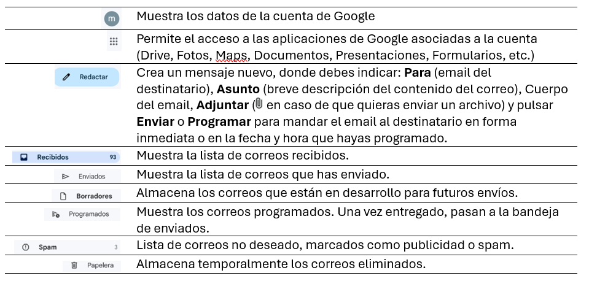
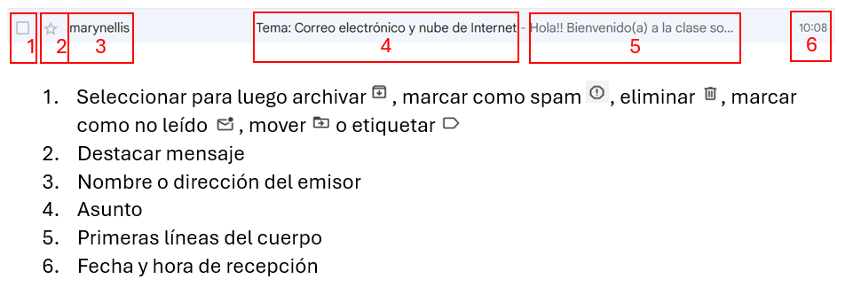
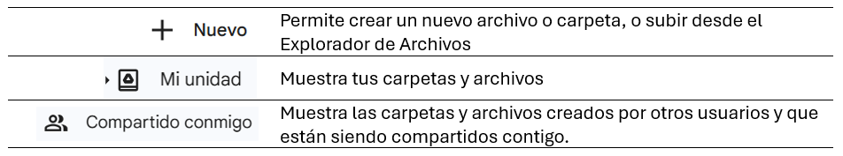

Entre los servicios que ofrece Internet se encuentra: el correo electrónico (e-mail) y la nube (the cloud), éstas poderosas herramientas nos permiten comunicarnos y almacenar información de manera eficiente y segura.
El correo electrónico es un medio de comunicación digital por escrito que aprovecha la tecnología multimediática de Internet para el envío en diferido de mensajes más o menos largos y dotados o no de adjuntos, entre dos o más interlocutores diferentes. Funciona de manera similar al correo tradicional (el de papel), pero en lugar de usar cartas y carteros, usamos computadoras y redes de Internet para enviar y recibir mensajes casi instantáneamente.
Existen proveedores de correo electrónico gratuitos y pagos. Los servicios gratuitos, como Gmail, Outlook, Yahoo Mail, ProtonMail y iCloud Mail, ofrecen funciones básicas sin costo. Los servicios pagos, por otro lado, ofrecen ventajas adicionales como más almacenamiento, mejor seguridad, y soporte técnico prioritario.
A continuación, algunas herramientas de la interfaz de GMAIL:
La lista de Recibidos muestra lo siguiente:
Una vez abierto el correo, puedes Responder a quien te envió el mensaje, o Reenviar el mensaje a otra persona.
Es una red de servidores remotos conectados a Internet para almacenar, administrar y procesar datos, servidores, bases de datos, redes y software. Lo que normalmente estaría almacenado en tu PC (tus programas o tus archivos, por ejemplo) pasa a estar en los servidores que forman la nube. Por eso se habla en inglés de Cloud Computing, que suele abreviarse simplemente como The Cloud.
Imagina que estás haciendo tu tarea y necesitas guardar tu trabajo. Antes, tal vez lo guardabas en una memoria USB o en la computadora de tu casa. Pero ¿qué pasa si la memoria USB se pierde o si la computadora se rompe? Aquí es donde entra la "nube".
La nube de Internet es un lugar especial en Internet donde puedes guardar archivos, fotos, videos y mucha información más. Es como un gigantesco disco duro en el cielo, pero en realidad, son muchos servidores (computadoras muy potentes) que están en diferentes partes del mundo. Estos servidores trabajan juntos para guardar y proteger tu información. Entre los proveedores de La Nube, se encuentran: Google (Drive), Microsoft (OneDrive), y Apple (iCloud).
A continuación, algunas herramientas de Google Drive:
Puedes ver los detalles y actividad de tus archivos, que te permitirá hacer control de cambios, o volver a versiones anteriores.
Cuando abres un archivo, con la herramienta Compartir puedes ingresar el correo electrónico de las personas que tendrán acceso al archivo o configurarlo como público, y establecer qué rol tendrán sobre el archivo (Lector, Editor, Comentador). Una vez configurado el acceso, puedes enviar una notificación para que le llegue al correo o simplemente copiar el enlace para enviárselo por otros medios como un mensaje de WhatsApp por ejemplo.